Jewel's Presence at the 1997(39th) Grammy Awards was a definite milestone in her career. However, with the amazing popularity she is gaining, these occur almost everyday. Jewel was the talk of the town with her translucent dress! I received permission to post these pictures of Jewel courtesy of Adam Longfellow. Now for the pictures:
| 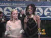 | 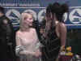 | 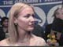 | 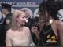 |
| 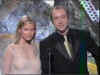 | 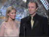 | 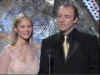 | 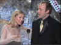 |
 |
|
 |
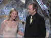 |
| 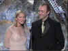 | 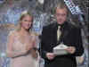 | 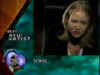 | 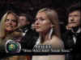 |
 |
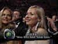 | 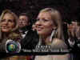 |
The gentleman with Jewel is Kevin Spacey. They presented the Hard Rock Performance Grammy. This event took place February 26. The nominations were announced January 7th via the Ed Sullivan Theater.
Below is a picture of Jewel hosting the MTV Grammy Guide. The gentleman with Jewel in this pose is Steve Poltz of the Rugburns.
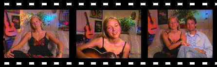
| BEST NEW ARTIST | BEST FEMALE POP |
| Garbage Jewel No Doubt The Tony Rich Project LeAnn Rimes |
Un-Break My Heart - Toni Braxton Get Out of This House - Shawn Colvin Because You Loved Me - Celine Dion Reach - Gloria Estefan Who Will Save Your Soul - Jewel |
| RECORD OF THE YEAR | ALBUM OF THE YEAR |
| Tracy Chapman - Give Me One Reason Eric Clapton - Change the World Celine Dion - Because You Loved Me Alanis Morissette - Ironic The Smashing Pumpkins - 1979 |
Beck - Odelay Celine Dion - Falling Into You The Fugees - The Score Smashing Pumpkins - Mellon Collie Various Artists - Waiting to Exhale |
| BEST MALE POP | BEST FEMALE ROCK |
| Let's/Night to Remember - Brian Adams Change the World - Eric Clapton Key West Intermezzo - John Mellencamp Nobody Knows - The Tony Rich Project Let Your Soul Be Your Pilot - Sting |
Mother Mother - Tracy Bonham Give Me One Reason - Tracy Chapman If It Makes You Happy - Sheryl Crow Spider Web - Joan Osborne Burning Down the House - Bonnie Raitt |
| SONG OF THE YEAR | BEST ROCK ALBUM |
| D. Warren - Because You Loved Me Bill Mack - Blue Kennedy,Kirkpatrick,Sims - Change/World Babyface - Exhale (Shoop Shoop) Tracy Chapman - Give Me One Reason |
Sheryl Crow - Sheryl Crow Crash - Dave Matthews Band Tragic Kingdom - No Doubt Road Tested - Bonnie Raitt Broken Arrow - Neil Young |
| BEST MALE ROCK | BEST POP BY DUO/GROUP |
| Only/Looks Good... - Bryan Adams Where It's At - Beck Ain't Gone 'n Give Up/Love - Eric Clapton Cry Love - John Hiatt Dead Man Walkin' - Bruce Springsteen |
Free As A Bird - The Beatles
As Long As It Matters - Gin Blossoms When You Love a Woman - Journey Fire on the Mountain - The Neville Brothers Peaches - The Presidents of the USA When You Wish Upon a Star - Take 6 |
| BEST ROCK BY A GROUP | BEST POP ALBUM |
| Stupid Girl - Garbage So Much to Say - Dave Matthews Band Wonderwall - Oasis 1979 - The Smashing Pumpkins Sixth Avenue Heartache - The Wallflowers |
Secrets - Toni Braxton New Beginning - Tracy Chapman A Few Small Repairs - Shawn Colvin Falling Into You - Celine Dion Mercury Falling - Sting |
No use of this page for authoring purposes is granted without my permission via email and a link to your site. MTV is copyright Viacom. For Grammy information check out the above link to their site.
{kind=link}
{kind=link}
{kind=link}
{kind=link}
{kind=link}
{kind=link}
{kind=link}
{kind=link}
{kind=link}
{kind=link}
{kind=link}
{kind=link}
{kind=link}